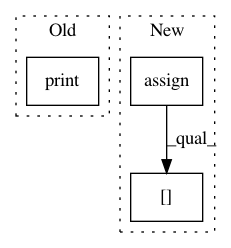

9aef0f280be9dbb22ac407d8478376beac8f955a,osmnx/pois.py,,parse_osm_relations,#Any#Any#,208
Before Change
elif relation["type"] == "multiline":
print("TODO: multiline relation")
elif relation["type"] == "multipoint":
print("TODO: multipoint relation")
// Merge "osm_way_df" and the "gdf_relations"
osm_way_df = osm_way_df.append(gdf_relations)
return osm_way_df
After Change
// Create GeoDataFrame with the tags and the MultiPolygon and its "ways" (ids), and the "nodes" of those ways
geo = gpd.GeoDataFrame(relation["tags"], index=[relation["id"]])
// Initialize columns (needed for .loc inserts)
geo = geo.assign(geometry=None, ways=None, nodes=None, element_type=None, osmid=None)
// Add attributes
geo.loc[relation["id"], "geometry"] = multipoly
geo.loc[relation["id"], "ways"] = member_way_ids
geo.loc[relation["id"], "nodes"] = member_nodes
geo.loc[relation["id"], "element_type"] = "relation"
geo.loc[relation["id"], "osmid"] = relation["id"]
// Append to relation GeoDataFrame
gdf_relations = gdf_relations.append(geo)
In pattern: SUPERPATTERN
Frequency: 3
Non-data size: 3
Instances
Project Name: gboeing/osmnx
Commit Name: 9aef0f280be9dbb22ac407d8478376beac8f955a
Time: 2018-05-03
Author: henrikki.tenkanen@helsinki.fi
File Name: osmnx/pois.py
Class Name:
Method Name: parse_osm_relations
Project Name: gboeing/osmnx
Commit Name: 2199c616c262de892462c94517cb911facf1eeed
Time: 2017-12-28
Author: henrikki.tenkanen@helsinki.fi
File Name: osmnx/pois.py
Class Name:
Method Name: parse_osm_relations
Project Name: QUANTAXIS/QUANTAXIS
Commit Name: a3b39f9e6e7e1b33a3eb9919923d939430b60b86
Time: 2017-09-01
Author: yutiansut@qq.com
File Name: QUANTAXIS/QAFetch/QATdx.py
Class Name:
Method Name: QA_fetch_get_stock_min